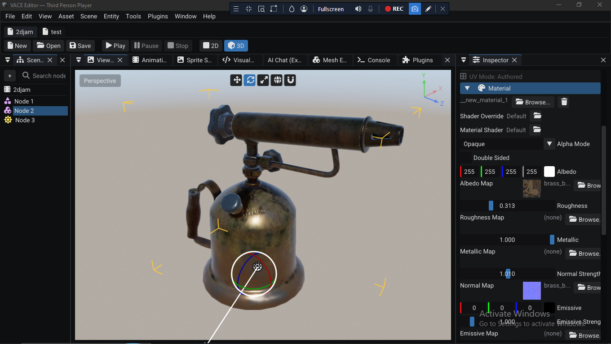
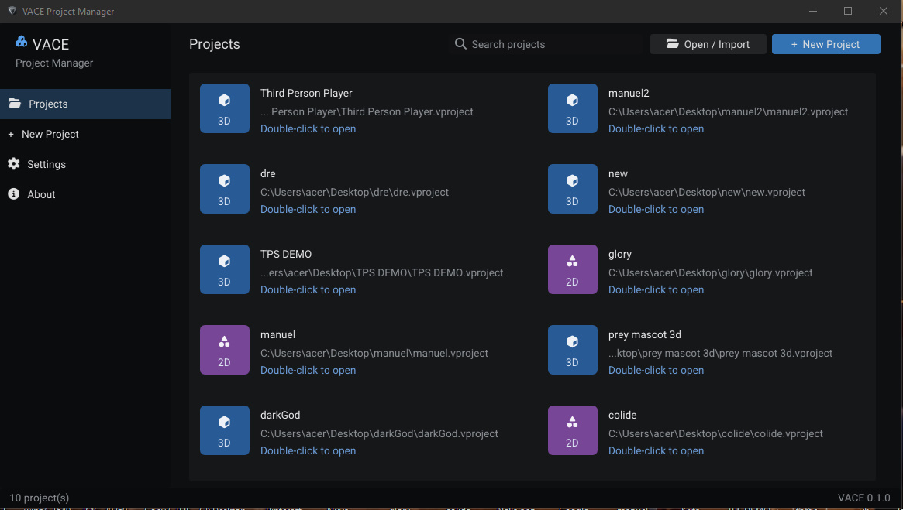

Editor walkthrough
A tour of the VACE editor and the Project Manager. Covers the layout, the panels, how to create a scene, how to add nodes, how to attach a script, and how Play works. If you have not opened the editor yet, start with Getting started.
Editor layout
The editor is a single window divided into a few panels. The default layout puts the scene hierarchy on one side, the viewport in the middle, the inspector and console around it. You can resize panels by dragging their borders.

The panels
| Panel | What it does |
|---|---|
| Hierarchy | The scene as a tree of nodes. Every node in the current scene lives here. Use the plus button at the top to add nodes. |
| Viewport | The 3D or 2D view of the scene. When you press Play and the scene has no camera, the editor camera is used. |
| Inspector | The properties of the currently selected node. Change its name, its transform, its components, and the scripts attached to it. |
| Console | Script logs and engine messages. Every LogInfo, LogWarning, and LogError from your scripts shows up here while playing. |
Scenes
A project is a collection of scenes. Each scene has its own node tree, and the runtime loads one scene at a time. A brand new project opens to a prompt telling you to create your first scene; until you do, the hierarchy and viewport stay empty.
To create a scene, use the scene menu or the prompt shown in the viewport. VACE creates the scene file, shows an empty hierarchy, and you can start adding nodes. Save the scene when prompted.
Pressing Play runs the current scene. To run a different scene, open it
first. Scripts can also load other scenes at runtime via
LoadScene; see the Script API.
Adding nodes
Nodes are the objects that make up a scene. Every object in the game world (a mesh, a sprite, a light, a camera, a sound emitter, a UI widget, a physics body) is a node, and every script runs attached to a node.
To add a node, click the plus button at the top of the Hierarchy panel. A menu opens split into:
- Node 3D: meshes, 3D cameras, lights, 3D physics bodies, and other 3D scene objects
- Node 2D: sprites, 2D cameras, 2D physics bodies, and other 2D scene objects
Pick the type that matches what you want. The node appears in the hierarchy and in the viewport, selected. Use the inspector on the right to change its name, transform, and components.
No camera is fine
If the scene has no camera node when you press Play, VACE uses the editor camera. You only need to add a camera node if the game itself needs a specific view (a first-person camera on a player, a follow camera, a fixed camera for a cutscene, and so on).
Inspector
The Inspector shows the currently selected node. It is how you edit everything about a node: its name, its transform (position, rotation, scale), its components (mesh renderer, collider, light, audio source, and so on), and any scripts attached to it.
Select a node in the hierarchy to load its properties into the inspector. When you change a value in the inspector, it is applied to the scene immediately. While the scene is playing, changes apply live and revert when you press Stop.
Scripts
Scripts are C++ files compiled into a .dll and attached to nodes.
You create and attach scripts from the inspector:
- Select a node in the hierarchy.
- In the inspector, find the script section.
- Either create a new script (VACE writes a starter
.cppinto your project) or attach an existing script from the project's scripts folder.
Scripts use the VACE::Script base class. Press Play to build and
run them; VACE compiles out-of-date script DLLs automatically before the scene
starts. The full scripting surface, from lifecycle hooks to input to physics to
JSON save data, is in the Script API reference.
If your project has no scripts, you never need a compiler. If you do write scripts, set up MinGW-w64 once from the Project Manager's Settings tab; see Installation > Setting up MinGW-w64. The toolchain is only used to build script DLLs, not to ship the game.
Inspector fields
Marking a public member with VACE_FIELD() makes it show up in the
inspector. This feature is still under active development: fields reflect in
the editor and can be edited, but editing them in the inspector does
not yet change the value the running script sees. Until this is
finished, set default values directly in the class body.
Play mode
Press the Play button to run the current scene. Play builds any script DLLs that are out of date, then launches the scene with the editor still attached, so you can watch the console, tweak values in the inspector, and pause or stop at any time.
- Play: build scripts if needed, start the scene.
- Pause: freeze the scene. The viewport and inspector stay responsive.
- Stop: end the scene and restore it to its pre-play state.
Changes you make in the inspector while the scene is playing are applied live. They are reverted when you stop, so you do not have to worry about accidentally saving a Play-session tweak to the scene.
Project Manager
The Project Manager is a separate executable that runs before the editor. It is where you create projects, open them, and configure the machine's toolchain. You can also return to it from inside the editor at any time.

Creating a project
Click New Project. You'll be asked for:
- Name: shown in the editor title bar and used as the project folder name
- Type: 2D or 3D. Sets the default scene mode and node mode for the project
- Path: the parent folder for the new project
- Add .gitignore: a checkbox. Leave it on if you keep the project in git
Confirming creates the project folder and its starter files. No build runs at this point, and no compiler is needed. Double-click the project in the list to open it in the editor.
Opening a project
Double-click an existing project in the list. The editor launches with that project loaded. The Project Manager itself stays open in the background so you can come back to it.
Settings
The Settings tab is where you configure the machine's toolchain. You only need it if you plan to write C++ scripts.

MinGW-w64
Download the WinLibs MinGW-w64 build (the 252 MB zip from
15.2.0posix-13.0.0-ucrt-r3),
extract it, then use the Settings tab's Browse button to select
the bin folder inside it. Click Configure and the
Project Manager adds it to your environment variables and verifies the compiler
runs. You never edit PATH yourself.
CMake
CMake is bundled with the VACE zip as an MSI. From the Settings tab, click the button to install CMake. The Project Manager launches the installer. In the installer, tick the option to add CMake to the system PATH, then finish. When you return to the Project Manager, it verifies CMake is on the PATH and reports that setup is complete.
After the toolchain is configured, VACE remembers it for every project on the machine. You do not need to redo this unless you uninstall or move MinGW-w64, or change your PATH in a way that breaks the entries the Project Manager added.